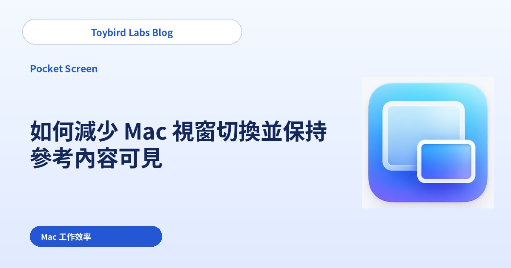
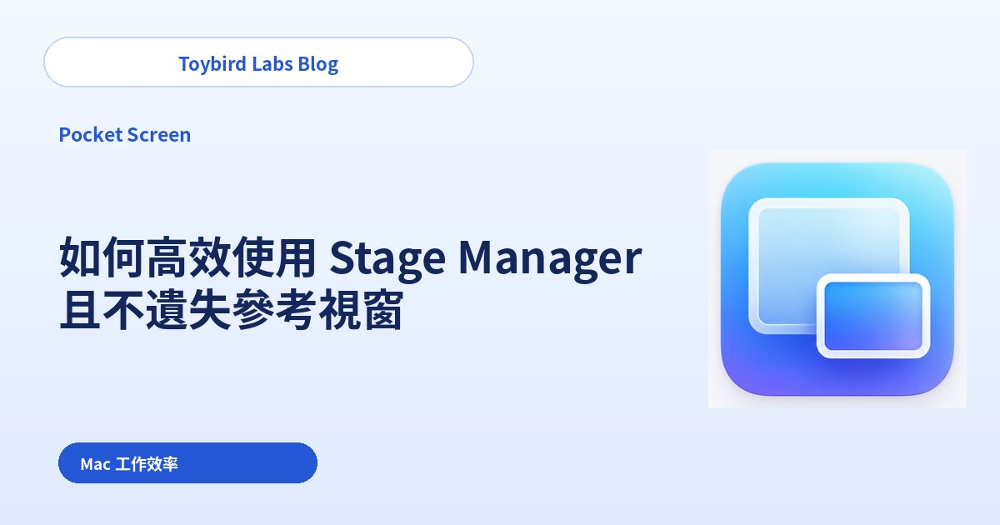
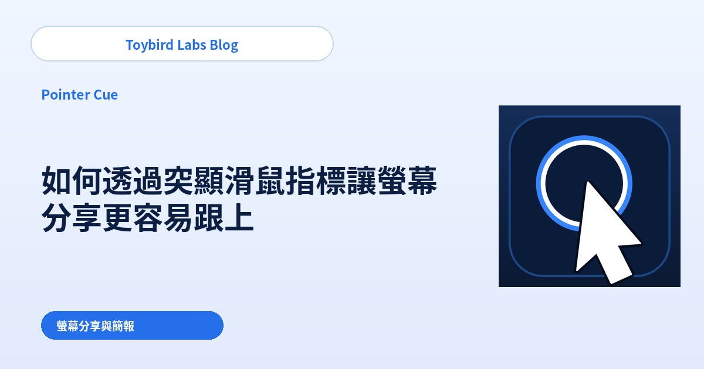
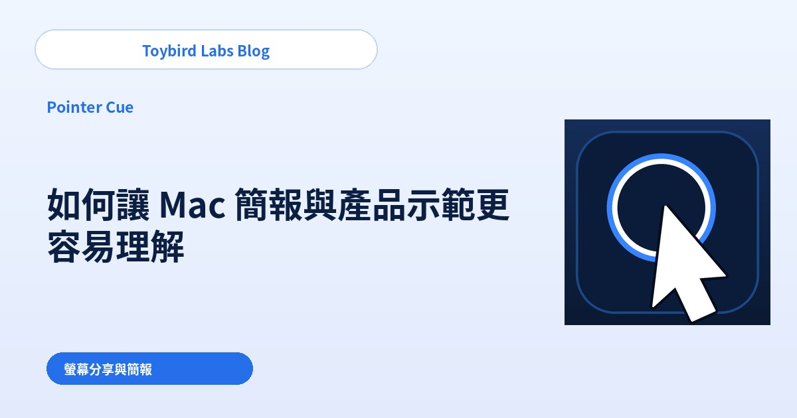
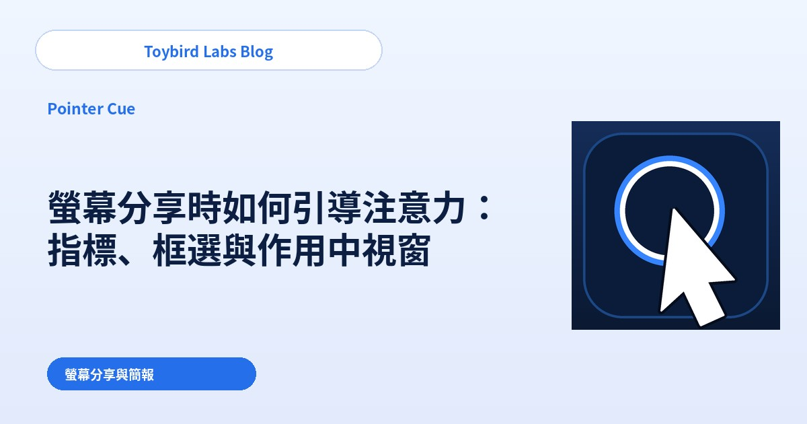

Toybird Labs Blog
提升 Mac 工作效率與螢幕簡報效果的實用文章
介紹單螢幕 Mac 工作、Stage Manager、螢幕分享、滑鼠指標與簡報重點提示等實用方法。
All articles
提高單一 MacBook 螢幕的工作效率

Mac 工作效率
如何在單一 MacBook 螢幕上邊看資料邊高效工作
介紹如何在單一 MacBook 螢幕上查看 PDF、網頁或聊天內容的同時高效工作，並比較並排、Split View、Stage Manager 與浮動參考視窗。

Mac 工作效率
如何減少 Mac 視窗切換並保持參考內容可見
介紹如何在 Mac 上讓 PDF、網頁、聊天或儀表板保持可見，藉此減少反覆切換視窗，並比較系統佈局與持續參考視窗。

Mac 工作效率
如何高效使用 Stage Manager 且不遺失參考視窗
介紹如何在 Mac 的 Stage Manager 中避免反覆遺失 PDF、網頁或聊天參考視窗，並比較同群組佈局與跨工作群組持續顯示的浮動參考視窗。
讓遠端會議與產品示範更清楚

螢幕分享與簡報
如何透過突顯滑鼠指標讓螢幕分享更容易跟上
介紹如何在 Zoom、Teams、Google Meet 螢幕分享中避免觀眾跟丟滑鼠指標，並比較系統設定、講解節奏與按需強調環。

螢幕分享與簡報
如何讓 Mac 簡報與產品示範更容易理解
介紹如何在 Mac 簡報、產品示範與螢幕分享中明確「現在該看哪個視窗」，並比較清理介面、單一視窗分享與作用中視窗強調。

螢幕分享與簡報
螢幕分享時如何引導注意力：指標、框選與作用中視窗
透過為不同目標搭配不同提示，讓螢幕分享更容易理解：控制項用指標、區域用框選、目前應用程式用作用中視窗強調。